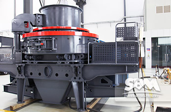
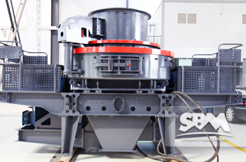
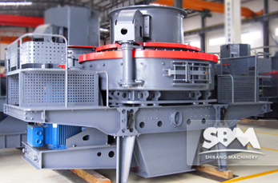

VSI5X Sand Making Machine

VSI5X Sand Making Machine
VSI5X sand making machine (the latest vertical shaft impact crusher improved from VSI crusher) is my company with advanced technology developed by the new sand making equipment, with high efficiency, smooth operation, high efficiency and other advantages. Suitable for soft or medium hard and extremely hard materials crushing, shaping, such as: a variety of river gravel, pebbles and so on. Widely used in highway, railway, water, construction, cement, refractories, metallurgy, glass sand, concrete mixing plant, gravel yard and other industries. Sand making machine in the work process, the material on their own mutual impact crusher, not in direct contact with the metal element, is the impact of the occurrence and lining materials, friction and grinding, reducing pollution angle, thereby reducing wear and extending the use of life, reduce maintenance costs.
- 
- 
- 
+86-21-58386189, 58386176
sbm@stoneminingmachine.com
Sand Making Machine Feature
Sand making machine wearing parts, low loss, all wearing parts are made of high quality wear-resistant materials at home and abroad, long service life. A small amount of wear parts made of special hard wear-resistant material, greatly reducing maintenance costs. Reasonable structure design, making little affected by the material moisture content, moisture content up to about 8%. Therefore, widely used mechanism for aggregate, cement, refractory, metallurgical, chemical and other industries.
- Dual purpose balk cargo tray-simplicity of operation, quick switchover of feedstock modes.
- Key parts adopt optimization design.
- Rotor optimization design-deepening cavity type to increase yield.
- Elaborately-designed Emission Mouth and Inner Curve-reducing resistance and increasing throughput.
Sand making production line after a reasonable design, small footprint, a reasonable match between devices, so stable operation and high productivity. The production line is broken rate, energy efficient, less dust pollution. Produced sand line with national standards for construction sand, uniform size, grain shape is good.
Sand making production line high degree of automation, almost without manual operation, reasonable design, practical, economical investment. Widely used in mining, metallurgy, water, building material, highway, urban construction and other industries. VSI5X crusher (the latest vertical shaft impact crusher improved from VSI crusher) is necessary crushing equipment used in manufactured sand production line, sand & gravel production plant etc. It is widely used for manufactured sand or artificial sand production. Also, it is the mainstream truing machine for mining and construction industries.
Sand Making Machine Technical Data
| Model | Feed at center&sides | Feed at center | Soft Material | Hard Material | REV (r/min) | Power (kw) | Motor Model | Machine Size (mm) |
|---|---|---|---|---|---|---|---|---|
| Capacity (t/h) | Max.Feeding (mm) | |||||||
| VSI5X7615DR | 150-280 | 70-140 | 35 | 30 | 1700-1900 | 4-75×2 | Y280S-4/75 | 4100×2330×2300 |
| VSI5X8522DR | 240-380 | 120-190 | 40 | 35 | 1500-1700 | 4-110×2 | Y315S-4/110 | 4140×2500×2700 |
| VSI5X9532DR | 350-540 | 180-280 | 45 | 40 | 1300-1510 | 4-160×2 | Y315L1-4/160 | 4560×2600×2900 |
| VSI5X1145DR | 500-640 | 250-360 | 50 | 45 | 1100-1310 | 4-220×2 | Y355M1-4/220 | 5000×2790×3320 |
Sand Making Machine Application
VSI5X series crushers are widely used in crushing nonmetal mine, concrete, fireproof material, abrasive filler, frit, construction aggregate, sand, metallurgy and so on. It is the indispensable machine in sand making industry and it is also the most ideal truing machine for mining and construction industries.
Services
Supply the most current design and technical expertise;Supply parts sales and training service far beyond the initial sale;Your profits with quality parts and expert service.
Related Products


SBM Company
With the development of our SBM, we would like to help more and more customers start their business in mining and construction industries, offer them the best solution, much more advanced machinery and better service.
Contact Us
Products
Contact SBM
+86-21-58386189，58386176
sbm@stoneminingmachine.com
Fax: +86-21-58385681
Office Add: No.416 Jianye Road, South Jinqiao Area,Pudong New Area, Shanghai, China.
Postcode: 201201